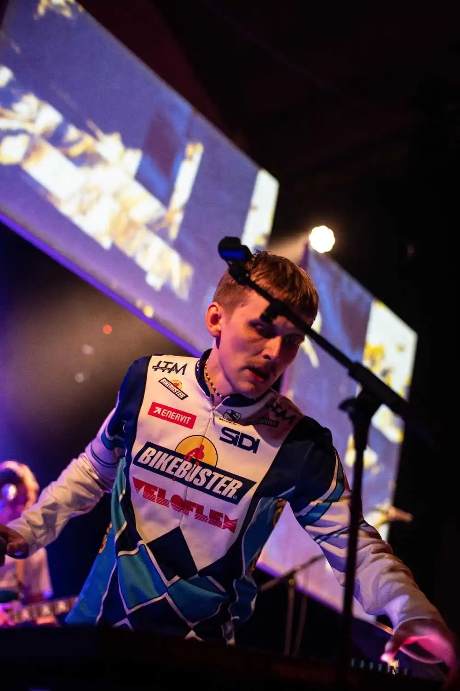
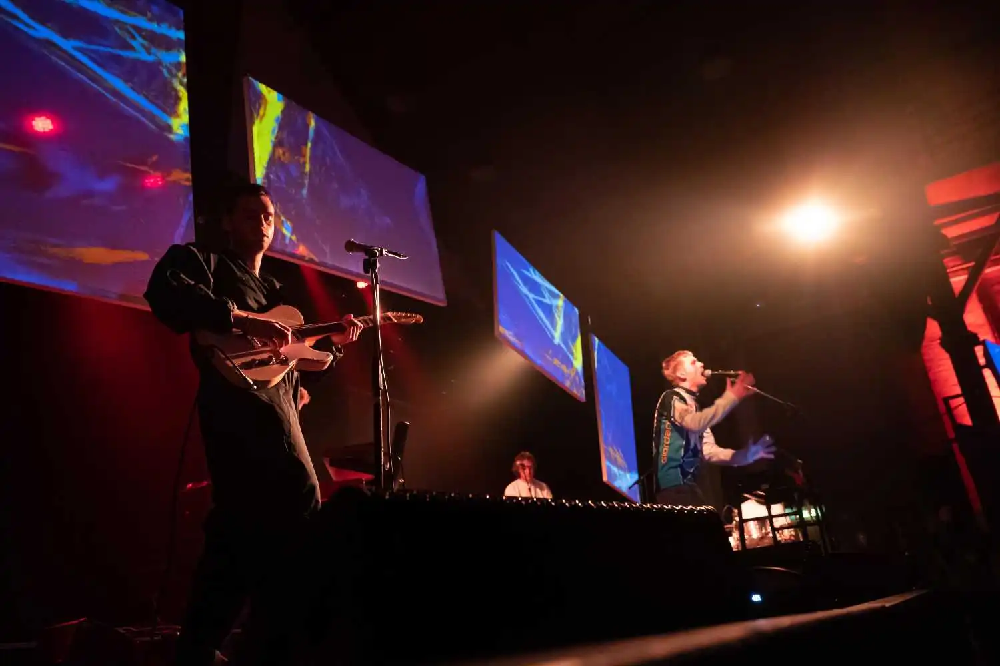
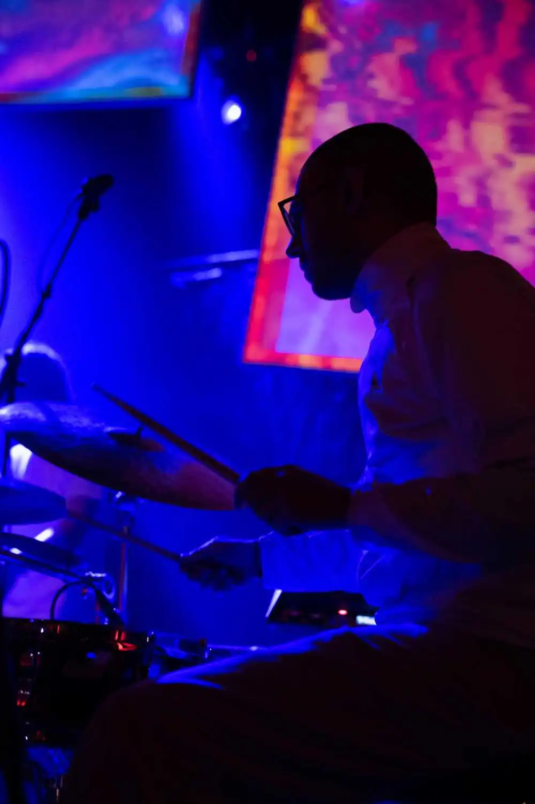
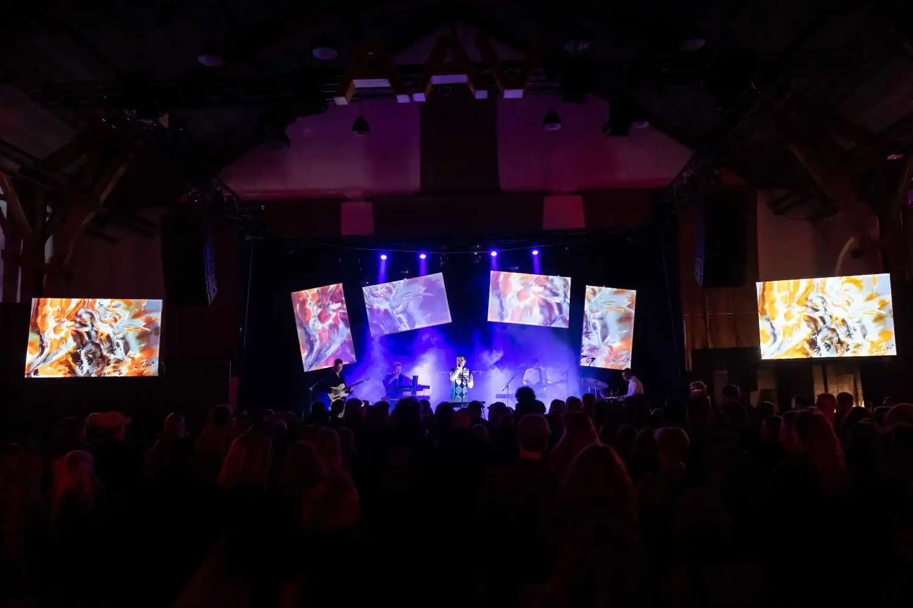
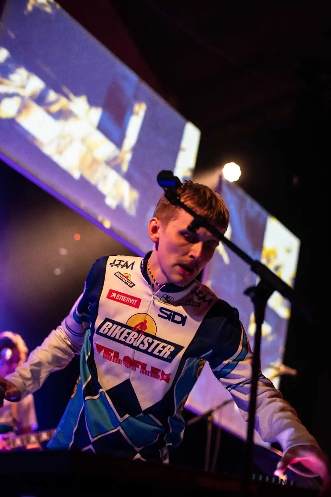
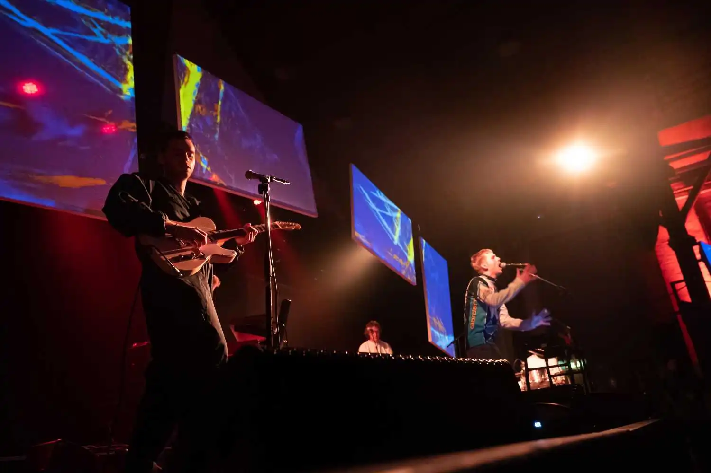
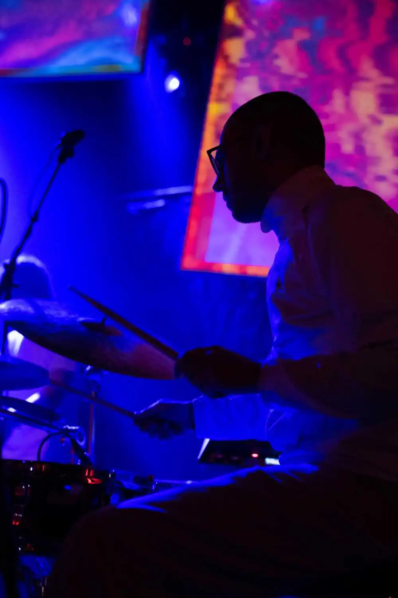
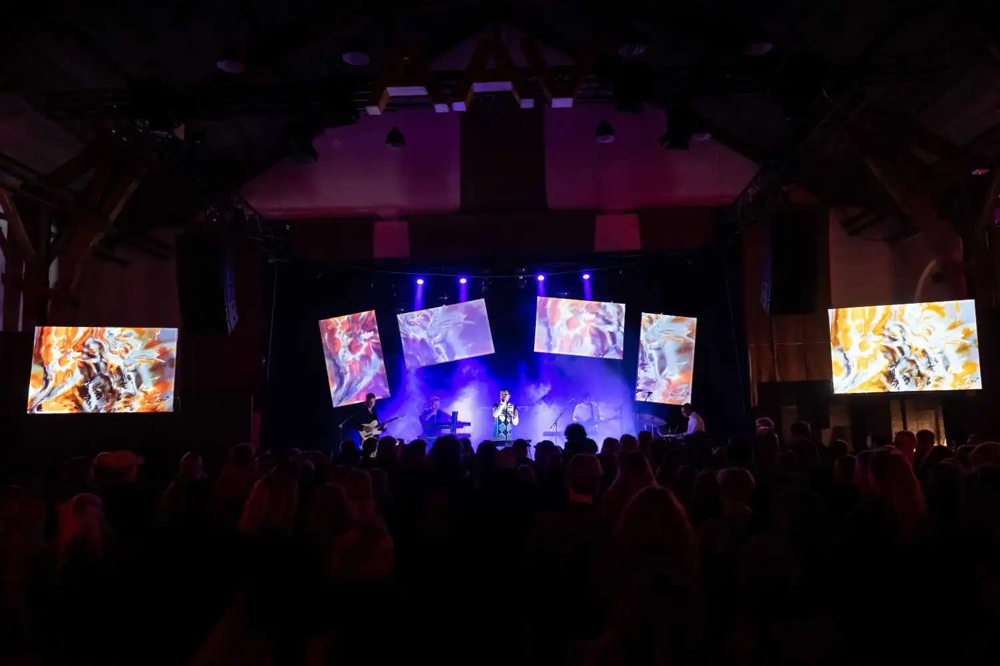

{kind=link}
{kind=link}
{kind=link}
{kind=link}


BY ASBJØRN KRAGH
Process:
MUX is a music association with a vision to promote and showcase the field of music and art in eclectic new combinations. All the events take a holistic approach forming an environment for the audience to immerse themselves in more sensory experiences than what is possible with the 'ordinary' concert format. MUX wants to spread awareness of the many different forms of artistic expression that exist in the city of Aarhus. This specific event was created as an invitation from the organization Aarhus Volume to join their four week festival AVENUE ONE at Ridehuset.
Close dialog with the team at MUX was key for us to set out on a journey to research the relationship between the visual aesthetic of the acts, their music and the brands of our collaborators. Working with our technical partners and the MUX-crew we managed to construct, set up and design one of our largest installations to date.
Featured artists: Tredjeperson & FRAADS
Credit: Photography by Jonatan Rønn
Products:
In a collaboration with Aarhus Volume we were hired by MUX to create a unique atmospheric experience for their audience and the venue. In order to achieve this we created a series of motion graphics and generative artworks to trigger and perform live to the music.
The final product came to life on the installation we designed and built for the stage, creating the optimal conditions for us to map out our visuals and shoot our two mounted projectors onto a number of large frames floating above the musicians. In order to inform the audience of the upcoming act and what was happening on stage, we also created animated announcements in the style of MUXs brand identity, which created a sense of visual coherence preparing the crowd for what was to come.
Expanding on the established formats of a concert experience added a new visual dimension to spark surprise and excitement all around.